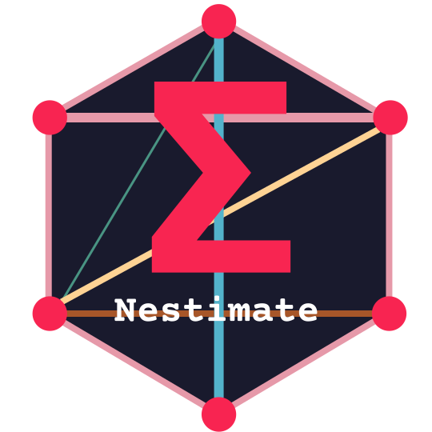

Network Estimation and Analysis with Nestimate
Source:vignettes/transition-networks.Rmd
transition-networks.RmdNestimate is a unified framework for estimating,
validating, and comparing networks from sequential and cross-sectional
data. It implements two complementary paradigms: Transition
Network Analysis (TNA), which models the relational dynamics of
temporal processes as weighted directed networks using stochastic Markov
models; and Psychological Network Analysis (PNA), which
estimates the conditional dependency structure among variables using
regularized partial correlations and graphical models. Both paradigms
share the same build_network() interface, the same
validation engine (bootstrap, permutation, centrality stability), and
the same output format — enabling researchers to apply a consistent
analytic workflow across fundamentally different data types.
This vignette demonstrates both paradigms, covering network estimation, statistical validation, data-driven clustering, and group comparison.
Part I: Transition Network Analysis
Theoretical Grounding
TNA uses stochastic process modeling to capture the dynamics of temporal processes, namely Markov models. Markov models align with the view that a temporal process is an outcome of a stochastic data generating process that produces various network configurations or patterns based on rules, constraints, or guiding principles. The transitions are governed by a stochastic process: the specific ways in which the system changes or evolves is rather random and therefore can’t be strictly determined. That is, the transitions are probabilistically dependent on preceding states — a method that assumes events are probabilistically dependent on the preceding ones like Markov models.
The main principle of TNA is representing the transition matrix between events as a graph to take full advantage of graph theory potentials and the wealth of network analysis. TNA brings network measures at the node, edge, and graph level; pattern mining through dyads, triads, and communities; clustering of sub-networks into typical behavioral strategies; and rigorous statistical validation at each edge through bootstrapping, permutation, and case-dropping techniques. Such statistical rigor that brings validation and hypothesis testing at each step of the analysis offers a method for researchers to build, verify, and advance existing theories on the basis of a robust scientific approach.
Data
The human_cat dataset contains 10,796 coded human
interactions from 429 human-AI pair programming sessions across 34
projects, classified into 9 behavioral categories. Each row represents a
single interaction event — the kind of data typically exported from log
files, coded interaction data, or learning management systems.
library(Nestimate)
head(human_cat)
#> id project session_id timestamp session_date actor
#> 5094 3439 Project_7 0086cabebd15 2026-03-05T11:32:52.057Z 2026-03-05 Human
#> 5095 3439 Project_7 0086cabebd15 2026-03-05T11:32:52.057Z 2026-03-05 Human
#> 5096 3439 Project_7 0086cabebd15 2026-03-05T11:32:52.057Z 2026-03-05 Human
#> 5097 3440 Project_7 0086cabebd15 2026-03-05T11:32:52.068Z 2026-03-05 Human
#> 5100 3442 Project_7 0086cabebd15 2026-03-05T11:39:19.098Z 2026-03-05 Human
#> 5103 3444 Project_7 0086cabebd15 2026-03-05T11:41:55.500Z 2026-03-05 Human
#> code category superclass
#> 5094 Context Specify Directive
#> 5095 Direct Command Directive
#> 5096 Specification Specify Directive
#> 5097 Interrupt Interrupt Metacognitive
#> 5100 Verification Verify Evaluative
#> 5103 Specification Specify DirectiveThe dataset is in long format with columns recording what
happened (category), who did it
(session_id), and when (timestamp).
Additional columns like project, code, and
superclass are automatically preserved as metadata and can
be used later for group comparisons or covariate analysis without manual
data wrangling.
Building Networks
Building networks in Nestimate is a single step: the
build_network() function is the universal entry point for
all network estimation. It accepts long-format event data directly with
three key parameters:
-
action: the column containing state labels — the occurrences or events that become network nodes -
actor: the column identifying sequences — who performed the action (one sequence per actor) -
time: the column providing temporal ordering — when it happened
Under the hood, build_network() calls
prepare_data() to convert the long-format event log into
wide-format sequences, automatically handling chronological ordering,
session detection, and metadata preservation.
Transition Network (TNA)
The standard TNA method estimates a first-order Markov model from sequence data. Given a sequence of events, the transition probability is estimated as the ratio of observed transitions from state to state to the total number of outgoing transitions from . These estimated probabilities are assembled into a transition matrix , where each element represents the estimated probability of transitioning from to . The resulting directed weighted network captures the probabilistic dependencies between events — the contingencies that shape the temporal process.
net_tna <- build_network(human_cat, method = "tna",
action = "category", actor = "session_id",
time = "timestamp")
print(net_tna)
#> Transition Network (relative probabilities) [directed]
#> Weights: [0.017, 0.657] | mean: 0.109
#>
#> Weight matrix:
#> Command Correct Frustrate Inquire Interrupt Refine Request Specify
#> Command 0.211 0.092 0.053 0.060 0.032 0.039 0.158 0.303
#> Correct 0.085 0.093 0.141 0.051 0.047 0.115 0.118 0.291
#> Frustrate 0.098 0.119 0.173 0.069 0.045 0.172 0.110 0.131
#> Inquire 0.190 0.138 0.101 0.188 0.078 0.065 0.086 0.108
#> Interrupt 0.244 0.096 0.099 0.117 0.093 0.089 0.068 0.140
#> Refine 0.053 0.076 0.069 0.044 0.033 0.086 0.150 0.470
#> Request 0.086 0.017 0.043 0.062 0.037 0.033 0.035 0.657
#> Specify 0.267 0.060 0.077 0.067 0.171 0.077 0.062 0.181
#> Verify 0.205 0.080 0.167 0.123 0.036 0.109 0.111 0.085
#> Verify
#> Command 0.051
#> Correct 0.059
#> Frustrate 0.082
#> Inquire 0.046
#> Interrupt 0.054
#> Refine 0.019
#> Request 0.031
#> Specify 0.037
#> Verify 0.085
#>
#> Initial probabilities:
#> Specify 0.293 ████████████████████████████████████████
#> Command 0.253 ██████████████████████████████████
#> Interrupt 0.098 █████████████
#> Request 0.093 █████████████
#> Inquire 0.087 ████████████
#> Frustrate 0.069 █████████
#> Verify 0.038 █████
#> Refine 0.035 █████
#> Correct 0.033 ████Frequency Network (FTNA)
The frequency method preserves raw transition counts rather than normalizing to conditional probabilities. This is useful when absolute frequencies matter — for instance, a transition that occurs 500 times from a common state may be more practically important than one occurring 5 times from a rare state, even if the latter has a higher conditional probability. Frequency networks retain the magnitude of evidence for each transition, which is lost in the normalization step.
net_ftna <- build_network(human_cat, method = "ftna",
action = "category", actor = "session_id",
time = "timestamp")
print(net_ftna)
#> Transition Network (frequency counts) [directed]
#> Weights: [14.000, 669.000] | mean: 110.903
#>
#> Weight matrix:
#> Command Correct Frustrate Inquire Interrupt Refine Request Specify
#> Command 377 164 95 108 58 70 283 543
#> Correct 63 69 104 38 35 85 87 215
#> Frustrate 85 103 150 60 39 149 95 113
#> Inquire 139 101 74 138 57 48 63 79
#> Interrupt 150 59 61 72 57 55 42 86
#> Refine 40 57 52 33 25 65 113 354
#> Request 81 16 41 59 35 31 33 622
#> Specify 669 149 194 169 428 194 156 452
#> Verify 85 33 69 51 15 45 46 35
#> Verify
#> Command 92
#> Correct 44
#> Frustrate 71
#> Inquire 34
#> Interrupt 33
#> Refine 14
#> Request 29
#> Specify 93
#> Verify 35
#>
#> Initial probabilities:
#> Specify 0.293 ████████████████████████████████████████
#> Command 0.253 ██████████████████████████████████
#> Interrupt 0.098 █████████████
#> Request 0.093 █████████████
#> Inquire 0.087 ████████████
#> Frustrate 0.069 █████████
#> Verify 0.038 █████
#> Refine 0.035 █████
#> Correct 0.033 ████Attention Network (ATNA)
The attention method applies temporal decay weighting, giving more
importance to recent transitions within each sequence. The
lambda parameter controls the decay rate: higher values
produce faster decay. This captures the idea that later events in a
process may be more indicative of the underlying dynamics than early
ones — for example, in learning settings where initial exploration gives
way to more purposeful regulatory behavior.
net_atna <- build_network(human_cat, method = "atna",
action = "category", actor = "session_id",
time = "timestamp")
print(net_atna)
#> Attention Network (decay-weighted transitions) [directed]
#> Weights: [8.030, 304.838] | mean: 58.943
#>
#> Weight matrix:
#> Command Correct Frustrate Inquire Interrupt Refine Request Specify
#> Command 199.284 83.233 55.725 64.170 56.786 41.242 131.205 280.612
#> Correct 41.997 42.362 52.144 24.589 22.371 43.843 41.453 113.721
#> Frustrate 48.965 52.465 83.859 34.492 24.027 69.751 48.671 81.297
#> Inquire 71.426 54.891 38.953 69.478 27.777 26.778 35.555 62.024
#> Interrupt 69.784 28.088 29.698 35.491 37.512 27.001 21.151 58.873
#> Refine 31.811 35.092 34.129 20.991 16.778 48.027 55.107 163.550
#> Request 50.030 15.374 28.468 33.049 39.931 26.790 25.926 263.278
#> Specify 304.838 84.283 111.199 92.172 183.669 106.532 115.536 301.458
#> Verify 40.968 17.392 34.647 26.091 8.030 23.976 23.509 34.011
#> Verify
#> Command 47.426
#> Correct 21.554
#> Frustrate 31.931
#> Inquire 16.465
#> Interrupt 18.287
#> Refine 10.621
#> Request 18.414
#> Specify 57.758
#> Verify 20.888
#>
#> Initial probabilities:
#> Specify 0.293 ████████████████████████████████████████
#> Command 0.253 ██████████████████████████████████
#> Interrupt 0.098 █████████████
#> Request 0.093 █████████████
#> Inquire 0.087 ████████████
#> Frustrate 0.069 █████████
#> Verify 0.038 █████
#> Refine 0.035 █████
#> Correct 0.033 ████Co-occurrence Network from Binary Data
When the data is binary (0/1) — as is common in learning analytics
where multiple activities are coded as present or absent within time
windows — build_network() automatically detects the format
and uses co-occurrence analysis to model how codes are associated with
each other. The resulting undirected network captures which events tend
to co-occur, complementing the temporal sequencing captured by TNA.
data(learning_activities)
net <- build_network(learning_activities, method = "cna", actor = "student")
print(net)
#> Co-occurrence Network [undirected]
#> Weights: [2681.000, 3290.000] | mean: 3047.333
#>
#> Weight matrix:
#> Reading Video Forum Quiz Coding Review
#> Reading 6100 3169 3211 2891 3138 3113
#> Video 3169 6262 3183 2903 3278 3290
#> Forum 3211 3183 5692 2942 2958 3045
#> Quiz 2891 2903 2942 5379 2681 2725
#> Coding 3138 3278 2958 2681 5886 3183
#> Review 3113 3290 3045 2725 3183 6186Window-based TNA (WTNA)
The wtna() function provides an alternative approach for
computing networks from one-hot encoded (binary) data, using temporal
windowing. This is useful when multiple states can be active
simultaneously within a time window. WTNA supports three modes:
-
"transition": directed transitions between consecutive windows -
"cooccurrence": undirected co-occurrence within windows -
"both": a mixed network combining transitions and co-occurrences
Since states can co-occur within the same window and follow each other from one window to the next, a mixed network captures both relationships simultaneously — modeling the events that co-occur together and those that transition, which neither a purely directed nor a purely undirected network can represent alone.
net_wtna <- wtna(learning_activities, actor = "student",
method = "transition", type = "frequency")
print(net_wtna)
#> Network (method: wtna_transition) [directed]
#> Weights: [877.000, 1094.000] | mean: 995.233
#>
#> Weight matrix:
#> Reading Video Forum Quiz Coding Review
#> Reading 1797 1006 1047 955 1036 1021
#> Video 1054 1861 1054 972 1058 1043
#> Forum 1043 1021 1672 943 956 1004
#> Quiz 935 951 955 1584 877 894
#> Coding 1008 1074 967 886 1737 1048
#> Review 1033 1094 985 908 1029 1822
#>
#> Initial probabilities:
#> Reading 0.209 ████████████████████████████████████████
#> Coding 0.194 █████████████████████████████████████
#> Video 0.179 ██████████████████████████████████
#> Review 0.151 █████████████████████████████
#> Quiz 0.141 ███████████████████████████
#> Forum 0.126 ████████████████████████
net_wtna_rel <- wtna(learning_activities, method = "transition", type = "relative")
print(net_wtna_rel)
#> Network (method: wtna_transition) [directed]
#> Weights: [0.132, 0.159] | mean: 0.148
#>
#> Weight matrix:
#> Reading Video Forum Quiz Coding Review
#> Reading 0.260 0.147 0.152 0.139 0.153 0.149
#> Video 0.151 0.263 0.149 0.138 0.152 0.148
#> Forum 0.158 0.154 0.249 0.142 0.146 0.150
#> Quiz 0.152 0.153 0.154 0.253 0.142 0.146
#> Coding 0.151 0.159 0.144 0.132 0.258 0.156
#> Review 0.151 0.159 0.143 0.133 0.151 0.263
#>
#> Initial probabilities:
#> Reading 0.500 ████████████████████████████████████████
#> Quiz 0.500 ████████████████████████████████████████
#> Video 0.000
#> Forum 0.000
#> Coding 0.000
#> Review 0.000Validation
Most research on networks or process mining uses descriptive methods. The validation or the statistical significance of such models are almost absent in the literature. Having validated models allows us to assess the robustness and reproducibility of our models to ensure that the insights we get are not merely a product of chance and are therefore generalizable. TNA offers rigorous validation and hypothesis testing at each step of the analysis.
Reliability
Split-half reliability assesses whether the network structure is stable when the data is randomly divided into two halves. High reliability means the network structure is a consistent property of the data, not driven by a small number of idiosyncratic sequences.
reliability(net_tna)
#> Split-Half Reliability (1000 iterations, split = 50%)
#> Mean Abs. Dev. mean = 0.0172 sd = 0.0017
#> Median Abs. Dev. mean = 0.0131 sd = 0.0018
#> Correlation mean = 0.9720 sd = 0.0058
#> Max Abs. Dev. mean = 0.0747 sd = 0.0167Bootstrap Analysis
Bootstrapping is a re-sampling technique that entails repeatedly — usually hundreds, if not thousands of times — drawing samples from the original dataset with replacement to estimate the model for each of these samples. When edges consistently appear across the majority of the estimated models, they are considered stable and significant. In doing so, bootstrapping helps effectively filter out small, negligible, or spurious edges resulting in a stable model and valid model. The bootstrap also provides confidence intervals and p-values for each edge weight, offering a quantifiable measure of uncertainty and robustness for each transition in the network.
set.seed(42)
boot <- bootstrap_network(net_tna)
boot
#> Edge Mean 95% CI p
#> -----------------------------------------------
#> Request → Specify 0.656 [0.625, 0.688] ***
#> Refine → Specify 0.470 [0.429, 0.515] ***
#> Command → Specify 0.304 [0.281, 0.327] ***
#> Correct → Specify 0.290 [0.262, 0.326] ***
#> Specify → Command 0.267 [0.249, 0.286] ***
#> ... and 37 more significant edges
#>
#> Bootstrap Network [Transition Network (relative) | directed]
#> Iterations : 1000 | Nodes : 9
#> Edges : 38 significant / 72 total
#> CI : 95% | Inference: stability | CR [0.75, 1.25]Centrality Stability
Centrality measures provide a quantification of the role or importance of a state or an event in the process. However, the robustness of these rankings must be verified. Centrality stability analysis quantifies how robust centrality rankings are to case-dropping: the CS-coefficient is the maximum proportion of cases that can be dropped while maintaining a correlation of at least 0.7 with the original centrality values. A CS-coefficient above 0.5 indicates stable centrality rankings; below 0.25 indicates instability and the centrality ranking should not be interpreted.
centrality_stability(net_tna)
#> Centrality Stability (1000 iterations, threshold = 0.7)
#> Drop proportions: 0.1, 0.2, 0.3, 0.4, 0.5, 0.6, 0.7, 0.8, 0.9
#>
#> CS-coefficients:
#> InStrength 0.90
#> OutStrength 0.80
#> Betweenness 0.90Clustering
Clusters represent typical transition networks that recur across
different instances. Unlike communities, clusters involve the entire
network where groups of sequences are similarly interconnected and each
exhibit a distinct transition pattern with its own set of transition
probabilities. Identifying clusters captures the dynamics, revealing
typical relations that learners frequently adopt as units across
different instances. cluster_data() computes pairwise
dissimilarities between sequences and partitions them into
k groups, then builds a separate network for each
cluster.
Cls <- cluster_data(net_tna, k = 3)
Clusters <- build_network(Cls, method = "tna")
Clusters
#> Group Networks (3 groups)
#> Cluster 1: 9 nodes, 72 edges
#> Cluster 2: 9 nodes, 72 edges
#> Cluster 3: 9 nodes, 72 edgesCentrality
The centrality() function computes centrality measures
for each cluster network. For directed networks, the defaults are
InStrength (the sum of incoming transition probabilities — how central a
state is as a destination), OutStrength (the sum of outgoing transition
probabilities), and Betweenness (how often a state bridges transitions
between other states).
Nestimate::centrality(Clusters)
#> $`Cluster 1`
#> InStrength OutStrength Betweenness
#> Command 1.4766026 0.8305085 0.3571429
#> Correct 0.5762721 0.9302326 0.0000000
#> Frustrate 0.6976714 0.7932961 0.0000000
#> Inquire 0.5322287 0.8321678 0.0000000
#> Interrupt 0.5640009 0.9132948 1.2142857
#> Refine 0.6740550 0.8896104 0.0000000
#> Request 0.7077846 0.9245283 0.0000000
#> Specify 2.3544971 0.8722222 1.5000000
#> Verify 0.3001842 0.8974359 0.0000000
#>
#> $`Cluster 2`
#> InStrength OutStrength Betweenness
#> Command 1.2513964 0.7542214 0.35714286
#> Correct 0.8106253 0.8646288 0.07142857
#> Frustrate 0.8483317 0.8571429 0.50000000
#> Inquire 0.7323874 0.8164251 0.07142857
#> Interrupt 0.4361842 0.9248120 0.00000000
#> Refine 0.5935612 0.9470199 0.14285714
#> Request 0.8849288 0.9586777 0.07142857
#> Specify 1.8767351 0.7624021 1.21428571
#> Verify 0.3857592 0.9345794 0.00000000
#>
#> $`Cluster 3`
#> InStrength OutStrength Betweenness
#> Command 1.0870893 0.7885350 0.28571429
#> Correct 0.6628886 0.9240838 0.07142857
#> Frustrate 0.7296484 0.8231293 0.07142857
#> Inquire 0.5734889 0.8015666 0.00000000
#> Interrupt 0.4483984 0.8964401 0.57142857
#> Refine 0.7667206 0.9107143 0.14285714
#> Request 0.9414318 0.9798535 0.00000000
#> Specify 2.2281499 0.8079943 1.50000000
#> Verify 0.4071647 0.9126638 0.00000000Permutation Test for Clusters
TNA offers a rigorous systematic method for process comparison based on permutation. Permutation testing is particularly important for data-driven clusters: because clustering algorithms partition sequences to maximize between-group separation, some degree of apparent difference is guaranteed by construction. The permutation test provides the necessary corrective — by randomly reassigning sequences to groups while preserving internal sequential structure, it constructs null distributions for edge-level differences. Only differences that exceed this null distribution constitute evidence of genuine structural divergence rather than algorithmic artifacts.
perm <- permutation_test(Clusters$`Cluster 1`, Clusters$`Cluster 2`)
perm
#> Permutation Test:Transition Network (relative probabilities) [directed]
#> Iterations: 1000 | Alpha: 0.05
#> Nodes: 9 | Edges tested: 81 | Significant: 13Mixed Markov Models
Mixed Markov Models (MMM) provide an alternative clustering approach
that uses an EM algorithm to discover latent subgroups with distinct
transition dynamics. Unlike cluster_data(), which clusters
based on sequence dissimilarity, MMM directly models the transition
probabilities within each component and assigns sequences
probabilistically through soft assignments. The covariates
argument integrates external variables into the EM algorithm, allowing
mixing proportions to depend on observed characteristics.
data("group_regulation_long")
net_GR <- build_network(group_regulation_long, method = "tna",
action = "Action", actor = "Actor",
time = "Time")
mmmCls <- build_mmm(net_GR, k = 2, covariates = c("Group"))
summary(mmmCls)
#> Mixed Markov Model
#> k = 2 | 2000 sequences | 9 states
#> LL = -45975.1 | BIC = 93181.5 | ICL = 93188.1
#>
#> Cluster Size Mix%% AvePP
#> ------------------------------
#> 1 1001 50.1% 0.999
#> 2 999 49.9% 0.999
#>
#> Overall AvePP = 0.999 | Entropy = 0.005 | Class.Err = 0.0%
#> Covariates: Group (integrated, 1 predictors)
#>
#> --- Cluster 1 (50.1%, n=1001) ---
#> adapt cohesion consensus coregulate discuss emotion monitor plan
#> adapt 0.000 0.278 0.460 0.030 0.070 0.111 0.035 0.016
#> cohesion 0.000 0.007 0.448 0.166 0.084 0.113 0.053 0.129
#> consensus 0.005 0.009 0.080 0.207 0.136 0.062 0.060 0.432
#> coregulate 0.011 0.036 0.156 0.032 0.305 0.146 0.078 0.217
#> discuss 0.120 0.033 0.214 0.096 0.222 0.099 0.028 0.011
#> emotion 0.002 0.325 0.301 0.047 0.078 0.095 0.042 0.111
#> monitor 0.011 0.061 0.159 0.064 0.381 0.086 0.018 0.207
#> plan 0.001 0.019 0.287 0.011 0.075 0.116 0.076 0.416
#> synthesis 0.302 0.037 0.387 0.067 0.088 0.075 0.021 0.023
#> synthesis
#> adapt 0.000
#> cohesion 0.000
#> consensus 0.007
#> coregulate 0.019
#> discuss 0.176
#> emotion 0.000
#> monitor 0.014
#> plan 0.000
#> synthesis 0.000
#>
#> --- Cluster 2 (49.9%, n=999) ---
#> adapt cohesion consensus coregulate discuss emotion monitor plan
#> adapt 0.000 0.260 0.523 0.000 0.030 0.143 0.029 0.014
#> cohesion 0.005 0.044 0.538 0.082 0.040 0.118 0.017 0.151
#> consensus 0.004 0.020 0.083 0.171 0.233 0.082 0.035 0.364
#> coregulate 0.022 0.036 0.109 0.013 0.235 0.203 0.096 0.266
#> discuss 0.024 0.062 0.426 0.073 0.168 0.112 0.017 0.013
#> emotion 0.003 0.326 0.337 0.023 0.122 0.062 0.032 0.091
#> monitor 0.011 0.049 0.160 0.051 0.369 0.097 0.019 0.226
#> plan 0.001 0.032 0.294 0.024 0.060 0.182 0.075 0.327
#> synthesis 0.144 0.029 0.573 0.015 0.029 0.065 0.000 0.146
#> synthesis
#> adapt 0.000
#> cohesion 0.006
#> consensus 0.008
#> coregulate 0.019
#> discuss 0.106
#> emotion 0.005
#> monitor 0.019
#> plan 0.003
#> synthesis 0.000
#>
#> Covariate Analysis (integrated into EM -- influences cluster membership)
#>
#> Cluster Profiles (numeric):
#> Cluster N (%) Group Mean (SD) Group Median
#> 1 1001 (50%) 150.45 (28.91) 150.00
#> 2 999 (50%) 50.45 (28.85) 50.00
#>
#> Predictors of Membership (reference: Cluster 1):
#> Cluster Variable OR 95% CI p Sig
#> 2 Group 0.15 [0.15, 0.15] <0.001 ***
#>
#> Model: AIC = 25.3 | BIC = 36.5 | McFadden R-squared = 0.99Building networks from the MMM result produces one network per discovered cluster:
Mnets <- build_network(mmmCls)
Mnets
#> Group Networks (2 groups)
#> Cluster 1: 9 nodes, 72 edges
#> Cluster 2: 9 nodes, 72 edgesPost-hoc Covariate Analysis
cluster_data() supports post-hoc covariate analysis:
covariates do not influence the clustering but are analyzed after the
fact to characterize who ends up in which cluster. This is the
appropriate approach when the clustering should reflect behavioral
patterns alone, and the researcher then asks whether those patterns are
associated with external variables.
Post <- cluster_data(net_GR, k = 2, covariates = c("Achiever"))
summary(Post)
#> Sequence Clustering Summary
#> Method: pam
#> Dissimilarity: hamming
#> Silhouette: 0.1839
#>
#> Per-cluster statistics:
#> cluster size mean_within_dist
#> 1 982 10.69340
#> 2 1018 18.59498
#>
#> Post-hoc Covariate Analysis (does not influence cluster membership)
#>
#> Cluster Profiles (categorical):
#> Cluster N Achiever=High N(%) Achiever=Low N(%)
#> 1 982 504 (51%) 478 (49%)
#> 2 1018 496 (49%) 522 (51%)
#>
#> Predictors of Membership (reference: Cluster 1):
#> Cluster Variable OR 95% CI p Sig
#> 2 AchieverLow 1.11 [0.93, 1.32] 0.245
#>
#> Model: AIC = 2774.6 | BIC = 2785.8 | McFadden R-squared = 0.00
#>
#> Note: Covariates are post-hoc and do not influence cluster assignments.
Postgr <- build_network(Post)
Postgr
#> Group Networks (2 groups)
#> Cluster 1: 9 nodes, 71 edges
#> Cluster 2: 9 nodes, 71 edgesPart II: Psychological Network Analysis
Theoretical Grounding
Probabilistic processes are commonly — and indeed best — represented mathematically as matrices, where rows represent nodes and columns denote direct probabilistic interactions between them. Several probabilistic network disciplines have recently become popular, most notably psychological networks, which estimate the conditional dependency structure among a set of variables. In psychological network analysis, variables (e.g., symptoms, traits, behaviors) are represented as nodes, and edges represent partial correlations — the association between two variables after controlling for all others. This approach reveals which variables are directly connected versus those whose association is mediated through other variables.
Nestimate supports three estimation methods for
psychological networks, all accessed through the same
build_network() interface.
Data
The srl_strategies dataset contains frequency counts of
9 self-regulated learning strategies for 250 students, falling into
three clusters: metacognitive (Planning, Monitoring, Evaluating),
cognitive (Elaboration, Organization, Rehearsal), and resource
management (Help_Seeking, Time_Mgmt, Effort_Reg).
data(srl_strategies)
head(srl_strategies)
#> Planning Monitoring Evaluating Elaboration Organization Rehearsal
#> 1 13 15 13 5 3 13
#> 2 14 11 12 10 25 19
#> 3 24 20 22 14 3 10
#> 4 19 18 15 17 27 13
#> 5 17 21 15 8 5 12
#> 6 4 6 5 26 24 25
#> Help_Seeking Time_Mgmt Effort_Reg
#> 1 27 12 21
#> 2 15 17 24
#> 3 6 12 29
#> 4 13 11 20
#> 5 6 7 8
#> 6 14 11 17Correlation Network
The simplest approach estimates pairwise Pearson correlations. This produces a fully connected undirected network where every pair of variables has an edge. While informative as a starting point, correlation networks do not distinguish direct from indirect associations.
net_cor <- build_network(srl_strategies, method = "cor")
net_cor
#> Correlation Network [undirected]
#> Sample size: 250
#> Weights: [-0.130, 0.485] | +26 / -10 edges
#>
#> Weight matrix:
#> Planning Monitoring Evaluating Elaboration Organization Rehearsal
#> Planning 0.000 0.423 0.358 -0.096 -0.083 -0.019
#> Monitoring 0.423 0.000 0.485 0.195 0.028 0.132
#> Evaluating 0.358 0.485 0.000 0.077 0.313 0.076
#> Elaboration -0.096 0.195 0.077 0.000 0.432 0.341
#> Organization -0.083 0.028 0.313 0.432 0.000 0.339
#> Rehearsal -0.019 0.132 0.076 0.341 0.339 0.000
#> Help_Seeking -0.108 -0.116 0.023 0.008 0.123 -0.130
#> Time_Mgmt 0.285 0.015 0.079 -0.033 0.085 -0.106
#> Effort_Reg -0.010 -0.008 0.250 0.050 0.135 0.029
#> Help_Seeking Time_Mgmt Effort_Reg
#> Planning -0.108 0.285 -0.010
#> Monitoring -0.116 0.015 -0.008
#> Evaluating 0.023 0.079 0.250
#> Elaboration 0.008 -0.033 0.050
#> Organization 0.123 0.085 0.135
#> Rehearsal -0.130 -0.106 0.029
#> Help_Seeking 0.000 0.209 0.176
#> Time_Mgmt 0.209 0.000 0.467
#> Effort_Reg 0.176 0.467 0.000Partial Correlation Network
Partial correlations control for all other variables, revealing direct associations only. If two variables are correlated solely because they share a common cause, their partial correlation will be near zero. This provides a more accurate picture of the dependency structure than zero-order correlations, though the resulting network can still be noisy in small samples.
net_pcor <- build_network(srl_strategies, method = "pcor")
net_pcor
#> Partial Correlation Network (unregularised) [undirected]
#> Sample size: 250
#> Weights: [-0.235, 0.502] | +21 / -15 edges
#>
#> Weight matrix:
#> Planning Monitoring Evaluating Elaboration Organization Rehearsal
#> Planning 0.000 0.268 0.283 -0.103 -0.146 0.046
#> Monitoring 0.268 0.000 0.432 0.274 -0.213 0.095
#> Evaluating 0.283 0.432 0.000 -0.156 0.406 -0.098
#> Elaboration -0.103 0.274 -0.156 0.000 0.380 0.181
#> Organization -0.146 -0.213 0.406 0.380 0.000 0.274
#> Rehearsal 0.046 0.095 -0.098 0.181 0.274 0.000
#> Help_Seeking -0.121 -0.054 0.039 0.004 0.102 -0.144
#> Time_Mgmt 0.397 -0.007 -0.207 -0.031 0.158 -0.137
#> Effort_Reg -0.235 -0.099 0.330 0.049 -0.092 0.096
#> Help_Seeking Time_Mgmt Effort_Reg
#> Planning -0.121 0.397 -0.235
#> Monitoring -0.054 -0.007 -0.099
#> Evaluating 0.039 -0.207 0.330
#> Elaboration 0.004 -0.031 0.049
#> Organization 0.102 0.158 -0.092
#> Rehearsal -0.144 -0.137 0.096
#> Help_Seeking 0.000 0.161 0.051
#> Time_Mgmt 0.161 0.000 0.502
#> Effort_Reg 0.051 0.502 0.000Regularized Network (EBICglasso)
The graphical lasso applies L1 regularization to the precision matrix
(the inverse of the covariance matrix), producing a sparse network where
weak or unreliable edges are shrunk to exactly zero. The
gamma parameter controls sparsity through EBIC model
selection — higher values yield sparser networks. This is the
recommended approach for psychological network analysis, as it balances
model fit against complexity and produces interpretable, replicable
network structures.
net_glasso <- build_network(srl_strategies, method = "glasso",
params = list(gamma = 0.5))
net_glasso
#> Partial Correlation Network (EBICglasso) [undirected]
#> Sample size: 250
#> Weights: [0.089, 0.413] | +13 / -0 edges
#>
#> Weight matrix:
#> Planning Monitoring Evaluating Elaboration Organization Rehearsal
#> Planning 0.000 0.295 0.161 0.000 0.000 0.000
#> Monitoring 0.295 0.000 0.361 0.105 0.000 0.000
#> Evaluating 0.161 0.361 0.000 0.000 0.221 0.000
#> Elaboration 0.000 0.105 0.000 0.000 0.329 0.228
#> Organization 0.000 0.000 0.221 0.329 0.000 0.218
#> Rehearsal 0.000 0.000 0.000 0.228 0.218 0.000
#> Help_Seeking 0.000 0.000 0.000 0.000 0.000 0.000
#> Time_Mgmt 0.205 0.000 0.000 0.000 0.000 0.000
#> Effort_Reg 0.000 0.000 0.161 0.000 0.000 0.000
#> Help_Seeking Time_Mgmt Effort_Reg
#> Planning 0.000 0.205 0.000
#> Monitoring 0.000 0.000 0.000
#> Evaluating 0.000 0.000 0.161
#> Elaboration 0.000 0.000 0.000
#> Organization 0.000 0.000 0.000
#> Rehearsal 0.000 0.000 0.000
#> Help_Seeking 0.000 0.141 0.089
#> Time_Mgmt 0.141 0.000 0.413
#> Effort_Reg 0.089 0.413 0.000
#>
#> Gamma: 0.50 | Lambda: 0.1319Predictability
Node predictability measures how well each node is predicted by its neighbors (R-squared from the network structure). High predictability indicates that a node’s variance is largely explained by its direct connections in the network; low predictability suggests the node is driven by factors outside the estimated network.
pred <- predictability(net_glasso)
round(pred, 3)
#> Planning Monitoring Evaluating Elaboration Organization Rehearsal
#> 0.251 0.316 0.332 0.241 0.279 0.161
#> Help_Seeking Time_Mgmt Effort_Reg
#> 0.051 0.274 0.252Bootstrap Inference
Non-parametric bootstrap assesses edge stability, centrality
stability, and provides significance tests for edge and centrality
differences. The boot_glasso() function is specialized for
graphical lasso networks, providing edge inclusion frequencies,
confidence intervals, CS-coefficients, and pairwise difference tests in
a single call.
boot_gl <- boot_glasso(net_glasso, iter = 1000,
centrality = c("strength", "expected_influence"),
seed = 42)Edge Significance
summary(boot_gl, type = "edges")
#> edge weight ci_lower ci_upper inclusion
#> 36 Time_Mgmt -- Effort_Reg 0.32491515 0.2402787627 0.49995578 1.000
#> 3 Monitoring -- Evaluating 0.30049766 0.2135739099 0.44420273 1.000
#> 10 Elaboration -- Organization 0.26232453 0.1759094880 0.40494836 1.000
#> 1 Planning -- Monitoring 0.22902145 0.1438835150 0.35852942 1.000
#> 14 Elaboration -- Rehearsal 0.15760204 0.0554857192 0.28256604 0.998
#> 9 Evaluating -- Organization 0.15443135 0.0724680604 0.38310566 0.998
#> 15 Organization -- Rehearsal 0.15232840 0.0636729072 0.29191756 0.998
#> 22 Planning -- Time_Mgmt 0.13034652 0.0414121518 0.37922397 0.989
#> 2 Planning -- Evaluating 0.12953651 0.0535907183 0.29342854 0.994
#> 31 Evaluating -- Effort_Reg 0.09309602 0.0000000000 0.30523777 0.953
#> 28 Help_Seeking -- Time_Mgmt 0.06512062 0.0000000000 0.22045877 0.883
#> 5 Monitoring -- Elaboration 0.03881843 0.0000000000 0.27775412 0.842
#> 35 Help_Seeking -- Effort_Reg 0.01956134 0.0000000000 0.16452337 0.639
#> 4 Planning -- Elaboration 0.00000000 -0.1765238132 0.00000000 0.569
#> 6 Evaluating -- Elaboration 0.00000000 -0.1500953615 0.00000000 0.188
#> 7 Planning -- Organization 0.00000000 -0.1700927401 0.00000000 0.597
#> 8 Monitoring -- Organization 0.00000000 -0.2260417137 0.00000000 0.358
#> 11 Planning -- Rehearsal 0.00000000 -0.0422651527 0.03811323 0.119
#> 12 Monitoring -- Rehearsal 0.00000000 0.0000000000 0.14113867 0.465
#> 13 Evaluating -- Rehearsal 0.00000000 -0.0797648695 0.02565436 0.141
#> 16 Planning -- Help_Seeking 0.00000000 -0.1689276000 0.00000000 0.548
#> 17 Monitoring -- Help_Seeking 0.00000000 -0.1325894747 0.00000000 0.525
#> 18 Evaluating -- Help_Seeking 0.00000000 0.0000000000 0.07943598 0.109
#> 19 Elaboration -- Help_Seeking 0.00000000 -0.0438698021 0.04286525 0.116
#> 20 Organization -- Help_Seeking 0.00000000 0.0000000000 0.17705659 0.614
#> 21 Rehearsal -- Help_Seeking 0.00000000 -0.2120800796 0.00000000 0.644
#> 23 Monitoring -- Time_Mgmt 0.00000000 -0.0965496487 0.00000000 0.225
#> 24 Evaluating -- Time_Mgmt 0.00000000 -0.1745304366 0.00000000 0.207
#> 25 Elaboration -- Time_Mgmt 0.00000000 -0.0708145578 0.00000000 0.146
#> 26 Organization -- Time_Mgmt 0.00000000 0.0000000000 0.14618494 0.306
#> 27 Rehearsal -- Time_Mgmt 0.00000000 -0.1601119497 0.00000000 0.527
#> 29 Planning -- Effort_Reg 0.00000000 -0.2377412472 0.00000000 0.503
#> 30 Monitoring -- Effort_Reg 0.00000000 -0.1316710059 0.00000000 0.308
#> 32 Elaboration -- Effort_Reg 0.00000000 -0.0001367775 0.07300666 0.164
#> 33 Organization -- Effort_Reg 0.00000000 0.0000000000 0.09380279 0.336
#> 34 Rehearsal -- Effort_Reg 0.00000000 0.0000000000 0.09946240 0.190Centrality Stability
summary(boot_gl, type = "centrality")
#> $strength
#> node value ci_lower ci_upper
#> 1 Planning 0.48890448 0.37253704 1.4995496
#> 2 Monitoring 0.56833754 0.44124222 1.4631744
#> 3 Evaluating 0.67756154 0.53015851 1.6425503
#> 4 Elaboration 0.45874500 0.33341348 1.1808440
#> 5 Organization 0.56908428 0.44195673 1.5442505
#> 6 Rehearsal 0.30993044 0.22306635 0.9836351
#> 7 Help_Seeking 0.08468196 0.01772335 0.8334546
#> 8 Time_Mgmt 0.52038228 0.38168367 1.4554888
#> 9 Effort_Reg 0.43757251 0.32045449 1.2261947
#>
#> $expected_influence
#> node value ci_lower ci_upper
#> 1 Planning 0.48890448 0.20691831 0.6142270
#> 2 Monitoring 0.56833754 0.39864460 0.8304885
#> 3 Evaluating 0.67756154 0.53015851 1.1390458
#> 4 Elaboration 0.45874500 0.28614495 0.7207834
#> 5 Organization 0.56908428 0.42522959 0.9582501
#> 6 Rehearsal 0.30993044 0.09868951 0.4621349
#> 7 Help_Seeking 0.08468196 -0.13814207 0.2614040
#> 8 Time_Mgmt 0.52038228 0.36555268 0.8701167
#> 9 Effort_Reg 0.43757251 0.30571131 0.7375021